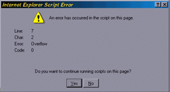
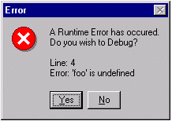
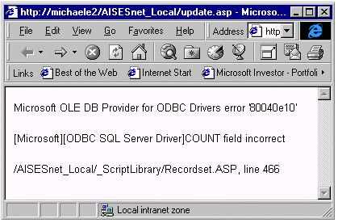

|
| ||
|
| ||
Michael Edwards
Developer Technology Engineer
September 30, 1998
The Microsoft Scripting Technologies  Web site recently sported a new headline about the beta releases of VBScript and JScript version 5.0 shipping with the Internet Explorer 5 Developer Preview release. I dropped everything to check it out. Why all the fuss? The release information indicated further support for the ECMA 262 language specification, but what caught my eye were the new exception-handling capabilities. Up until now, JScript has had absolutely no error-handling capabilities, something most people would consider a major language flaw. Well, you can't make that claim about JScript anymore.
Web site recently sported a new headline about the beta releases of VBScript and JScript version 5.0 shipping with the Internet Explorer 5 Developer Preview release. I dropped everything to check it out. Why all the fuss? The release information indicated further support for the ECMA 262 language specification, but what caught my eye were the new exception-handling capabilities. Up until now, JScript has had absolutely no error-handling capabilities, something most people would consider a major language flaw. Well, you can't make that claim about JScript anymore.
I'll start this article by explaining the concepts behind exception handling and why robust Web applications use it. If you are already experienced with exception handling, you will probably want to skip the theory and go directly to my overview of exception handling in Microsoft® JScript® version 5.0. I'll conclude by relating my experiences working with the beta release, which may be useful if you're thinking about downloading it yourself (it's available as a separate download  ).
).
Exception handling is a mechanism for handling errors that can occur during the execution of your code. Handling errors that happen at run time is old stuff, but doing it by using run-time exceptions is a relatively recent innovation. In order to understand what exceptions are, and how neat they are for handling run-time errors, let's first review how "traditional" error handling is done:
// Pretend that ServerComponent represents a custom ActiveX control
// that is designed to be run on the server.
var obj = Server.CreateObject("SomeComponent");
if (obj == null)
{
// Handle the case where the object was not created.
}
else
{
// getIndex returns -1 for an error, otherwise the index
var index = obj.getIndex();
if (index == -1)
{
// Figure out what the error was.
}
else
{
// It worked, so we can use the index value.
...
Notice how the return values represent either an error code or the thing we were after in the first place? Our error-handling code is mingled with our "normal" processing. The mingling makes the code harder to read and more difficult to maintain. And if a given error means we need to abort from our desired execution path, we have to get creative in our control-flow statements. All these problems go away with exception handling.
Instead of returning error codes to the caller, many objects are designed to indicate error conditions by using exceptions (sometimes this is referred to as "raising an error"). If an exception occurs during script execution, then processing resumes in a block of your code that is only executed in the event of an exception. In other words, script processing does not resume in the line immediately following the one that caused the exception. For example, the CreateObject() method of the ASP Server object uses exceptions to indicate a failure to create the indicated object. Assuming the getIndex() method of SomeObject also uses exceptions for error-conditions, we can simplify the above error-handling code by separating the successful code path from the error-handling code using the new JScript try...catch statement as follows:
try {
// If an exception occurs during the execution of this
// block of code, processing of this entire block will
// be aborted and will resume with the first statement in its
// associated catch block.
var obj = Server.CreateObject("SomeComponent");
var index = obj.getIndex();
...
}
catch (exception) {
// exception holds information about the nature of the error.
}
By wrapping code that can produce exceptions in a try...catch block, you are "exception handling."
Besides exceptions that can occur while accessing a Web page component, such as the CreateObject server component referenced above, other types of exceptions can occur in the processing of Web page script. For example, JScript syntax errors generate an exception at run time, and arithmetic errors, such as dividing by zero, will cause an exception. So even the simplest scripting, with no components involved, can cause exceptions.
If your code doesn't handle exceptions, then a higher-level handler will handle them for you. One way to explain this is to show you the pictures that your customers will see when your client-side script doesn't handle exceptions. The first picture is a dialog your customer must answer when an exception goes unhandled in your client-side script:

Dialog due to overflow exception in client-side script (without script debugger)
Or maybe you have installed the Microsoft Script Debugger and see this picture when your client-side script references an undefined object:

Dialog due to undefined object reference in client-side script (with script debugger)
In either of these cases, the browser's script engine handled the exception for you by displaying these dialogs. If you use Active Server Pages (ASP) to execute server-side scripts on your Web page, the ASP exception handler sends your customer a page similar to the one below:

Page resulting from exception due to error in server-side script
Any of these errors can shut down your Web-based application. Worse, your customers usually won't know what to do when faced with the above dialogs. By handling exceptions, you not only prevent them from being shown, you get to decide the best way to handle the error. If it means you need to interact further with the customer, you can make sure the exchange is meaningful.
While exception handling makes it much easier to manage the mechanics of error handling, it doesn't magically solve the truly difficult part: figuring out what to do when an error occurs. The process of analyzing what problems can occur and how you should deal with them consumes a large portion of your time, and exception handling doesn't fundamentally change that. (Sigh.)
I am going to explain how JScript exception handling works by comparing it to Java, C++, and Microsoft Visual Basic Scripting Edition (VBScript). If you don't know these languages, don't despair -- I'll use a very gentle approach that teaches as we go.
A lot of JScript syntax is derived from Java and C++. Naturally, you would expect this to be true of JScript exception handling, especially since the C++ and Java exception-handling mechanisms are so similar. I think your expectations will be met.
The exception-handling syntax in C++ and Java centers around the try...catch statement. The try keyword precedes a block of code that may throw an exception, and a catch block follows its closing brace. The following syntax will work in C++, Java, or JScript:
try {
// Statements or function calls that may cause an exception.
}
catch ( declaration ) {
// This block is executed when an exception occurs.
}
The main difference between Java, C++, and JScript exception handling lies in what the declaration can be, and how it is used to determine the execution path. In Java, the declaration is an instance of a Java class that extends the standard Java Throwable class. For example, if you access a COM object in a try block in Visual J++, you use com.ms.com.ComFailException (which extends Throwable):
catch ( com.ms.com.ComFailException e) {
// This block is executed when the exception is of type
// com.ms.com.ComFailException.
}
In C++, declaration isn't so restrictive. It can be an instance of the standard C++ exception class, but it can also be any C++ type, such as a string:
catch ( char *errMsg ) {
// This block is executed when the exception is of type pointer to char.
}
JScript takes its cue here from C++ more than Java, because declaration can be any JScript variable:
catch ( exception ) {
// This block is executed for any JScript exception.
}
Notice that the JScript syntax does not allow you to express the type of the variable exception, as you can in Java and C++. That's because in JScript the type of a variable is mutable, so exception can be a variable of any valid JScript data type  . The mutability of JScript variables contributes to another difference between the way the catch clause works in JScript version 5.0 when compared with Java or C++.
. The mutability of JScript variables contributes to another difference between the way the catch clause works in JScript version 5.0 when compared with Java or C++.
Both Java and C++ allow the use of multiple catch blocks where the type of declaration determines which block to execute. Hence, in Java or C++ you might see the following:
try {
// someMethod can throw an exception of type Foo or of type Bar.
someObject.someMethod(someParameters);
}
catch ( Foo foo ) {
// This code will execute only if the exception thrown during
// the execution of someMethod is of type Foo.
}
catch ( Bar bar ) {
// This code will execute only if the exception thrown during
// the execution of someMethod is of type Bar.
}
With C++ and Java, you can also catch any and all exceptions in a single clause. In C++, the syntax is the following:
catch ( ... )
While in Java, the syntax is shown below:
catch ( Throwable t )
In JScript version 5.0, one (and only one) catch clause can execute an exception. So you accomplish the equivalent of the above C++/Java snippets by nesting the exception types in conditional statements:
try {
// someMethod throws a someObjectError object when an error occurs
// and indicates different error types by using a Category property.
someObject.someMethod(someParameters);
}
catch ( exception ) {
// This code will execute when *any* exception occurs during the
// execution of someMethod.
// Ensure exception is a someObjectError object before treating it like one.
if (exception instanceof someObjectError) {
if (exception.Category == "Foo") {
// Tell the user they committed a Foo error.
}
else if (exception.Category == "Bar") {
// Tell the user they committed a Bar error.
}
}
}
The main thing that needs to be explained in the above code is the use of instanceof. In JScript, you must explicitly determine the type of exception that was thrown, whereas in C++ and Java it is done automatically (the catch clause is not executed if the types don't match). Of course, the vendor for someObject also has to define the someObjectError JScript object somewhere.
There is one more difference in the way the catch clause works in JScript version 5.0 when compared with Java/C++, but before I discuss it, I need to tell you about throwing exceptions. In C++/Java, the throw statement is used to cause an exception to occur. The following syntax, which works for both C++ and Java, also works in JScript:
throw declaration;
As with the try...catch syntax, the difference between C++/Java and JScript lies in what the declaration is allowed to be. Because whatever you throw has to be caught, the differences are exactly as I described above. That is, declaration must be of type Throwable in Java, while C++ and JScript allow a variable of any type.
Java and C++ have syntax for explicitly declaring whether functions you have created can generate an exception of a certain type, and can even require that your function's caller handle those exceptions. It's kind of like a road hazard warning sign where you can just look at a C++ or Java function declaration to know whether it can throw any exceptions -- you don't need to actually travel the road (or read all the function's code) to know what manner of problems you may meet. JScript is much simpler -- you can put a throw statement anywhere you want, and you can have it throw any JScript variable you want. Due to this simplification, in JScript it is doubly important to provide good documentation for any script libraries that you are creating so scripters don't have to read and understand your code in order to know how to handle any error conditions.
Now that you understand how to throw an exception in JScript, I can point out how JScript handles the catch clause differently. Some readers may have noticed the above JScript snippet still doesn't do exactly what its preceding C++/Java example did. If an exception is not handled in C++ or Java (that is, there are no catch clauses matching the type of the exception and the C++ "catch all" syntax is not used), the exception is automatically propagated to a higher-order handler. JScript works a little differently because the single catch clause will catch any and all exceptions. Thus, for the above JScript snippet to compare accurately with its preceding C++/Java snippet, you need to execute the following statement when exception.Category is not "Foo" or "Bar":
// Not "our" exception, so propagate it to next higher handler. throw exception;
JScript allows nested exception handlers (meaning you can embed a try...catch statement within another try...catch statement), so the next-highest handler may be another of your own exception handlers. Otherwise, if you are already executing in your highest-order handler, the next exception handler is the browser itself (and you saw what the browser does with unhandled exceptions in the dialog boxes above).
JScript exception handling improves significantly on the error-handling features available to VBScript programmers. If you are accustomed to developing components in Microsoft Visual Basic®, you may find this disappointing, but the VBScript error-handling features are a very small subset of those available in VB.
Let's get into this by first going over the differences in how you handle errors. In VBScript, you turn error handling on with the On Error Resume Next statement  :
:
Sub test
On Error Resume Next ' turns on error handling for following statements
' and remains active for the duration of the procedure
End Sub
If a run-time error occurs in the above test procedure prior to the line containing the On Error statement, error handling is not enabled, and further script execution in the procedure is aborted. If error handling is not enabled in the procedure that called test, script execution is aborted there as well. Script execution will continue aborting up the call stack (the list of procedures that have been called, but have not yet returned) until returning to a procedure with error handling enabled, where execution resumes with the line following the procedure call. If error handling is not enabled for any procedure in the call stack, then the default error handler is invoked. Otherwise, if an error occurs on a line in the test procedure subsequent to the On Error statement, then error handling is enabled and execution will continue on the very next line.
One key difference between JScript and VBScript error handling is the flexibility for indicating statements that are enabled for error handling. In VBScript, once you turn on error handling, it remains enabled for all statements remaining in the procedure, or until you execute the On Error Goto 0 statement. (Note that even though the VBScript documentation for the On Error statement does not mention the On Error Goto 0 statement, it is supported and will work in your code.) In JScript, error handling is enabled only for those statements contained within a try block. Thus, both VBScript and JScript allow you to enable error handling for specific blocks of code.
Another key difference between JScript and VBScript is where script execution resumes when a handled error occurs. In VBScript, processing continues on the following line, but in JScript it first resumes in the catch block, and then in the line immediately following the catch block. That means that in a JScript try block, execution is aborted for any lines in the try block following the statement that caused the error.
Also, VBScript has no special syntax to indicate code which should be executed in the event of an error. So how do you execute error-handling code in VBScript at all? Well, you manually check for errors after every statement or procedure call that may cause an exception.
'Enable error handling
On Error Resume Next
' Clear the Err object of error information (in case a previous statement
' caused an exception)
Err.Clear
' statement or procedure call that might cause an exception goes here
' See whether an error occurred.
If Err.Number > 0 Then
' error handling code goes here
window.alert(Err.Description)
End If
The above VBScript snippet uses the intrinsic VBScript Err object  , and hence introduces our next comparison to JScript. In VBScript, information describing a script error is always encapsulated in the Err object. The Err object has five properties initialized by the source of the exception. In JScript version 5.0, this is equivalent to the Error object
, and hence introduces our next comparison to JScript. In VBScript, information describing a script error is always encapsulated in the Err object. The Err object has five properties initialized by the source of the exception. In JScript version 5.0, this is equivalent to the Error object  . The JScript Error object is compared to the VBScript Err object in the table below.
. The JScript Error object is compared to the VBScript Err object in the table below.
| JScript version 5.0 Error properties | VBScript version 5.0 Err properties | Description |
| Error.number | Err.Number | Run-time error code (maps to internal script engine error or an error status code returned by an Automation object). |
| Error.description | Err.Description | String expression containing a description of the error. |
In addition to its five properties, the VBScript Err object also has two methods, Clear and Raise. The JScript Error object has none. As you saw above, in VBScript you have to call Clear before executing a statement that may raise an error. This is necessary because the VBScript engine does not clear the property settings in this object automatically. Thus, if you execute multiple lines of code before checking the value of the Err object, its properties will reflect the last error that occurred (information on any previous errors having been overwritten). There is no equivalent situation in JScript because exception-handling code located in a catch clause is immediately called when an exception occurs on any line contained in the corresponding try clause. The other VBScript Err method, Raise, is comparable to the new JScript throw statement, but there are important differences. To understand the differences, let's explore an example that demonstrates raising exceptions using the VBScript Err object and an equivalent example using the new JScript exception-handling mechanism.
In VBScript you can generate your own run-time errors by initializing any needed Err properties and then calling Err.Raise:
Sub CauseError()
Err.Description = "This error is user-defined"
Err.Number = 1
Err.Source = "SBN.JScriptExceptionsArticle"
Err.Raise
End Sub
Sub RaiseError()
On Error Resume Next
Err.Clear
CauseError
If Err.Number > 0 And Err.Source == "SBN.JScriptExceptionsArticle" Then
window.alert("Please excuse my error")
End Sub
The equivalent code in JScript differs because the JScript version 5.0 Error object does not include a Source property to determine the source of an error. That's all right, though, because in JScript you are allowed to define your own object or variable to describe the error, and you can use the instanceof operator to identify it (as shown below). This means you aren't limited to describing run-time exceptions with just the Err object as you are in VBScript. So, in JScript you could do something like the following:
// Define my own exception object.
function Exception(Number, Description) {
this.Number = Number;
this.Description = Description;
}
function CauseException() {
// Create an instance of my exception object.
exception = new Exception(1, "This error is user-defined");
// Raise my exception.
throw exception;
}
function RaiseException() {
try {
// Go and cause my exception to occur.
CauseException();
}
catch (exception) {
// Make sure this was my exception.
if (exception instanceof Exception) {
window.alert("Please excuse my error");
else {
// Somebody else threw this exception, rethrow it.
throw exception;
}
}
}
The other important difference to keep in mind is how the Raise method sets the properties of the error object, but does not alter the flow of execution like the throw statement in JScript does.
The documentation for many of the COM components you might want to use with JScript describes Visual Basic Err.Number error values in base 10 decimal notation. Happily, the Err.Number value is the same as the JScript Error.number value, so JScript developers can use the error values that are documented for Visual Basic just fine. However, the documentation for some COM components indicates error values using hexadecimal notation (base 16 for you non-alternative-math-base-types). These hex error codes are based on HRESULTS (the primary way COM methods communicate failure information to their callers). Because HRESULTS are 32-bit values that always have the high-bit set, you will run into a problem in the beta if you try to compare them directly. Fortunately, there is a simple workaround.
In my Web project I use the updateRecord() method on the Recordset Design-time control to update my database records with changes submitted by the user. I had some Textbox Design-Time controls bound to the float and datetime SQL datatypes. As a result, it is possible for users to enter non-date or non-float values into the textboxes for these fields. When that happens, the SQL Server ODBC driver will generate a Cursor exception indicating a datatype mismatch, and generate an ASP error page that looks very similar to the one I showed earlier. To deal with this, I first tried the following:
// Update the record with the changes in the databound DTC elements.
function SubmitButton_onclick() {
// Use the new try...catch feature of JScript version 5 to catch errors.
try {
// update the record
Recordset1.updateRecord();
}
catch (exception) {
// See if this is a cursor error thrown by the data provider
//(indicating the user entered a non-date value in one of the
// datetime fields or a non-float value in the GPA field).
if ((exception instanceof Error) &&
(exception.number == 0x80040E21))
// Redirect to a page that explains the error in terms a normal person can fathom
{
Response.Redirect("updateError.htm");
}
// wasn't a cursor error, something else went wrong
throw exception;
}
}
As it turns out, there were still a few problems, including some of my own making. First, the main problem is in the comparison statement highlighted in red. This statement won't work in the beta due to some sign-extension weirdness with JScript number types. I won't get into the details, but to get around it you have to compare the signed, base-10 equivalent of the hex error code for the above code to work. In other words, you have to treat hexadecimal HRESULT values as signed, 32-bit values and sign-extend them to 64-bit. A comparison that will work is the following:
if ((exception instanceof Error) &&
(exception.number == -2147217887))
{
Response.Redirect("updateError.htm");
}
The other problem I ran into was with the throw statement, also highlighted in red. There is a problem in the beta where the thrown object will not be the same as the caught object. Consider, for example, if I am testing a page, and an exception occurs that I'm not handling (in the above snippet, any exception but the specific Cursor error I look for). Since the rethrown error will be different from the original one, I won't be able to tell what the exception really is from the information indicated by the script engine's default exception handler (the dialogs shown above). Even though I probably don't want to allow any exceptions to be handled by the script engine in the production version of my site, I do want to see what the real error is while I am testing and debugging. The workaround is to insert a breakpoint on the throw statement and examine the error in the debugger. (If you aren't using the cool new debugging features of Visual InterDev 6.0  , comment out your exception handling, and reproduce the problem.)
, comment out your exception handling, and reproduce the problem.)
Microsoft Scripting Technologies  (includes information on the JScript version 5.0 beta release, as well as references, samples, and lots more).
(includes information on the JScript version 5.0 beta release, as well as references, samples, and lots more).
Learn more about script errors on Microsoft Scripting Technologies  .
.
Microsoft MSDN Online Web Workshop Server Technologies (everything you ever wanted to know about Server Technologies, and I mean everything).
(everything you ever wanted to know about Server Technologies, and I mean everything).
Handling COM errors in Java  (Java is not JScript, but I think this nonetheless has useful information for JScript developers).
(Java is not JScript, but I think this nonetheless has useful information for JScript developers).
Until now, JScript developers have relied on ad hoc error-trapping mechanisms provided by the author of a scripting object. Some JScript developers even resorted to wrapping their JScript code with VBScript error handlers. Unhappily, many would-be JScript developers could only grumble to themselves while they wrote all their Web page script in VBScript. I don't mean to insult those who prefer VBScript, but it is supposed to be all about choice, right? Internet Explorer is script engine neutral and all that? Microsoft JScript version 5.0 brings back choice in scripting languages, because now you can develop robust Web applications in JScript that require more advanced error-handling facilities. And JScript's new error-handling features, like many of its other structures, continue to emulate Java and C++
If you've never handled run-time exceptions in your script before, it is something you should consider. One of the things that contribute to the happy experiences of the average non-technical person exploring the Internet is the way we handle and present error situations to her. And the design for the new error-handling feature adheres to the spirit of JScript by borrowing heavily from the way it is specified for Java and C++.
Did you find this material useful? Gripes? Compliments? Suggestions for other articles? Write us!
© 1999 Microsoft Corporation. All rights reserved. Terms of use.